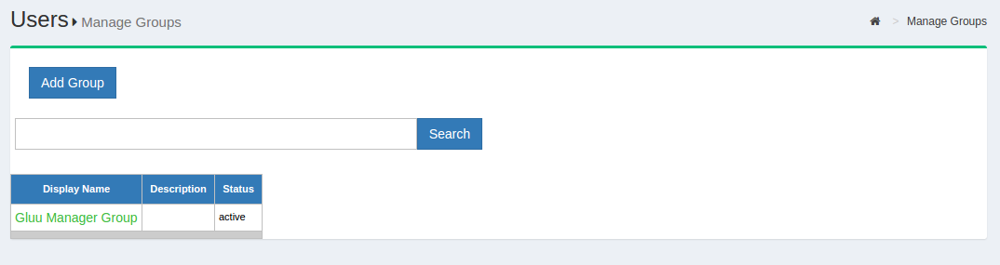

User Management in Gluu Server#
Overview#
You can either "push" or "pull" identity data to the Gluu server to keep it up-to-date with the latest user claims. In the "pull" mode, otherwise known as LDAP Synchronization or Cache Refresh, the Gluu Server can use one or more existing LDAP identity sources (like Microsoft Active Directory) as the authoritative source of identity information. To "push" identities to the Gluu Server you can use the JSON/REST SCIM API. Local user management can also be performed inside oxTrust. Each method is detailed below.
Local User Management#
In oxTrust, you can add, edit and manage people, groups and user attributes and claims to ensure the proper information is released about the right people.
Manage People#
To manage people, navigate to User > Manage People.
From this interface you can add and search users. Because the user database can potentially be very large, a value is required in the search field. In other words, you can not click search with a blank entry to populate all users. If you need to see all users, this would be best performed manually within the Gluu LDAP server. Upon performing a user search in oxTrust a list will be populated with all users that match the search.

To edit a user, simply click on any of the hyperlinks associated with that user and you will be taken to a user management interface where you can modify specific attributes relating to that user.

Manage Groups#
Out of the box, the Gluu Server includes one group: the Gluu Manager
Group (gluuManager). Groups can be added and populated as
needed. By using the Manage Groups feature, the Gluu Server
Administrator can add, delete or modify any group or user within a
group. The list of available groups can be viewed by hitting the
Search button with a blank search box.

The Gluu Server Administrator can modify information such as Display
Name, Group Owner, Visibility type etc. The Server Administrator can
also add or delete users within existing groups. The group information
is represented as shown below.

If any member of the Organization is required to be added in any
specific group, this can be achieved be clicking on the Add Member
button. The flow is Add Member --> Search the name/email of the user
--> Select the user --> Click OK --> Update.

Import People#
Gluu Server allows the administrator to import users from a file. This can be accessed by navigating to Users > Import People.

- Click on the
Addbutton to select the file from which the users will be imported. This feature has been tested with axlsfile.

- The file needs to be validated before it can be imported. Click on the
Validatebutton.

- Click on the
Importbutton to complete the import of users.
File Structure#
The file needs to contain the following fields from which the user data will be pulled. Please remember to use the exact spelling as shown here.
-
Username
-
First Name
-
Last Name
-
Email
User Registration#
The Gluu Server is shipped with a very basic user registration feature. The registration page can typically be found at https://<hostname>/identity/register. It's important to note that when user registration is handled via oxTrust, the users can not be added to a backend LDAP or Active Directory server. This means that self-registration via oxTrust is only effective if users are authenticated by GluuLDAP (and not a backend LDAP or AD server).
Note
When possible, we recommend handling user registration in your app locally, then pushing the user information to the Gluu Server via SCIM. This will give you more control and flexibility in defining the exact registration process. Also, since it was primarily designed as an interface for admins, frequently oxTrust is not Internet facing.
A limited number of attributes are present in the default registration form. If more attributes are needed they can be added via the GUI by navigating to Organization Configuration > Manage Registration. Learn how to add attributes to the default registration form.
User Registration Custom Script#
The User Registration custom script can be used to control and validate user registrations. In the oxTrust GUI, navigate to Configuration > Manage Custom Scripts > User Registration.

Set the enable_user value to true so that the user can login as soon as the registration is complete. If you want to manually review and approve new user registrations, you can leave this value set to false.

Click Enable checkbox at the bottom of the page.
Now users should be able to self-register through the user registration link, which should be available at <hostname>/identity/register.
LDAP Synchronization#
LDAP Synchronization, a.k.a. Cache Refresh, is the process of connecting one or more existing backend LDAP servers, like Microsoft Active Directory, with the Gluu Server's local LDAP server. Synching people and attributes from a backend server speeds up authentication transactions. It is possible to perform attribute transformations, changing the name of attributes, or even using an interception script to change the values. Transformations are stored in the Gluu LDAP service.
Note
If you are synching user information from multiple backend servers (AD or LDAP) simultaneously, the backend tree structure should be identical.
Video Tutorial#
For a guided video overview of configuring Cache Refresh, please watch the following three videos:
- Part 1: What is 'Cache Refresh' and How Does it Work?
- Part 2: Configuring Cache Refresh in the Gluu Server
- Part 3: Managing Authentication After You've Setup Cache Refresh
Things To Remember#
The Gluu Server supports two LDAP modes:
- Authentication
- Identity mapping
Only sometimes is it the same LDAP server. To synchronize user accounts from an external LDAP directory server, you can use the built-in oxTrust features for Cache Refresh, which supports mapping identities from one or more source directory servers.
After configuring Cache Refresh, you should give it some time to run and populate the LDAP server. Here are some tips before you get started:
-
Enable 'Keep External Person' during CR setup. This will allow your default user 'admin' to log into Gluu Server after initial Cache Refresh iteration. If you do not enable 'Keep External Person', your 'admin' user including all other test users will be gone after first Cache Refresh iteration.
-
Make sure you are using LDAP authentication, not VDS. You will only need VDS setting if you are using the Radiant Logic Virtual Directory Server.
-
Check the snapshots folder to see if files are being created.
-
Use the oxTrust admin to browse users.
-
Use the command
ldapsearchto check to see if results are starting to come in. The following command will search for the total number of users in the Gluu LDAP:
# /opt/opendj/bin/ldapsearch -h localhost -p 1636 -Z -X -D "cn=directory manager" -w 'pass_of_ldap_ -b 'ou=people,o=DA....,o=gluu' dn | grep "dn\:" | wc -l
- Try to login with one of these users. We assume that you have also setup your Gluu Server to use the correct LDAP server for authentication.
Things To Know#
The deployer needs to know various values of the backend AD to configure Cache Refresh. For example, host & port, bindDN user information, bindDN password, Objectclasses, attributes which will be pulled etc.
In addition, the deployer needs to know generic information about the
Gluu Server's LDAP. By default, the deployer can use localhost:1636,
cn=directory manager, password chosen during installation,
ou=people,o=site as server information, bindDN, bindDN password and
baseDN respectively.
After collecting this information, the deployer can move forward with the Cache Refresh setup.

-
Last Run: The date and time of the latest cache refresh cycle completion is shown here.
-
Updates at the Last Run: This shows the total number of users who have been updated in the last Cache Refresh cycle. For example an user who has any of his attribute updated will show up here.
-
Problem at the Last Run: This shows the number of users who have been rejected by the Gluu Server during the update. If there are any rejections, please contact Gluu Support for clarification and help.

Customer Backend Key and Attributes#

-
Key Attribute: This is the unique key attribute of backend Active Directory/LDAP Server such as SAMAccountname for any Active Directory.
-
Object Class: This contains the Object Classes of the backend Active Directory/LDAP which has permission to talk to Gluu Server Cache Refresh such as person, organizationalPerson, user etc.
-
Source Attribute: This contains the list of attributes which will be pulled and read by the Gluu Server.
-
Custom LDAP Filter: If there is any custom search required, this filtering mechanism can be used such as "sn=*" whereas the value of this field ensures that every user must contain an attribute named SN.
Source Backend LDAP Servers#

This section allows the Gluu Server to connect to the backend Active Directory/LDAP server of the organization.
-
Name: Please input source as the value.
-
Use Anonymous Bind: Some customers do now allow username/password connections to their backend server. Enable this option if this applies to your organization.
-
Bind DN: This contains the username to connect to the backend server. You need to use full DN here. As for example, cn=gluu,dc=company,dc=org.
-
Use SSL: Use this feature if the backend server allows SSL connectivity.
-
Max Connections: This value defines the maximum number of connections that are allowed to read the backend Active Directory/LDAP server. It is recommended to keep the value of 2 or 3.
-
Server: This contains the backend Active Directory/LDAP server hostname with port i.e. backend.organization.com:389. If organization has a failover server, click Add Server and add more hostnames with port.
-
Base DN: This contains the location of the Active Directory/LDAP tree from where the Gluu Server shall read the user information.
-
Enabled: This check-box is used to save and push the changes. Do not use this unless the server administrator has entered all the required values.
-
Change Bind Password: This can be used for a new password or to change any existing password.
If your organization has a multiple Active Directory/LDAP server, click on Add source LDAP server and add the additional server information. Please remember that a failover server is not a new server.
Inum LDAP Server#

This section of the application allows the server administrator to connect to the internal LDAP of the Gluu Server. As Gluu Server administrator, you do not need to insert anything here in this section as new Gluu Server versions automatically populates this for you (unless you try to manually configure it anyway).
-
Refresh Method: The Gluu Server allows the Server Administrator to apply two types of Cache Refresh mechanism--(i) VDS Method and (ii) Copy Method.
-
VDS Method: Any organization with a database like mysql can use the VDS method. This option can be enabled via the drop-down menu in Refresh Method option.

- Copy Method: If the organization has any kind of Active Directory/LDAP server, they are strongly recommended to use the Copy Method from the drop-down menu.

Attributes Mapping#
When the Copy method is selected, a section for Attribute mapping will be exposed. In this section, the Gluu Server Administrator can map any attribute from the backend Active Directory/LDAP to the LDAP cache of the Gluu Server.

In the source attribute to destination attribute mapping field, you can enter the source attribute value on the left, and the destination attribute on the right. In other words, you can specify what the attribute is on the backend in the left field, and what it should be rendered as when it comes through the Gluu Server in the right field.
The Administrator can select any Cache Refresh Method according to the backend Active Directory/LDAP server, but there are some essential values for both types of cache refresh method. The values are given below.
-
Pooling Interval (Minutes): This is the interval value for running the Cache Refresh mechanism in the Gluu Server. It is recommended to be kept higher than 15 minutes.
-
Script File Name: The Gluu Server cache refresh can accept any kind of Jython Script which might help to calculate any custom/complex attribute i.e. eduPersonScopedAffiliation. For more information please contact Gluu Support.
-
Snapshot Folder: Every cycle of of Gluu Server Cache Refresh cycle saves an overall snapshot and problem-list record on a specified location. This is where the Gluu Server Administrator can specify the location. You can easily decide whether cache refresh synchronizes all users or not. Generally the rejected users are enclosed in the problem-list file. An overall report is displayed at the top of the cache refresh page with headings Updated at the last run and Problems at the last run.
-
Snapshot Count: This defines the total number of snapshots that are allowed to be saved in the hard drive of the VM. It is recommended to be kept to 20 snapshots.
Latest Gluu Servers (including Community Edition) introduced two upgraded sections here.
-
Server IP Address: Include the IP of your Gluu Server here. This feature helps to run Cache Refresh mechanism perfectly in a clustered environment.
-
Removed Script File Name location: New version of the Gluu Server allows the administrator to manage your custom scripts with more interactive section under configuration named Manage Custom Scripts.
-
Update: This button is used to push the changes in the Gluu Server. Hit this button only when the values have been entered, completely.
-
Update and Validate Script: This button is used to test the operation and integrity of any custom script such as a Jython Script.
SCIM 2.0#
This section outlines how to add/remove user from Gluu Server CE using SCIM-Client.
Add User#
There are two methods to add users:
Required Parameters#
| Parameter | Description |
|---|---|
| userName | The intended username for the end-user |
| givenName | The first name of the end-user |
| familyName | The last name of the end-user |
| displayName | The formatted first name followed by last name |
| groups | Optional parameter if the user is added to any specific group |
JSON String#
The user is added using a JSON object string using the required parameters; however it is possible to add more parameters. The following is an example of a JSON string used to add a user.
Scim2Client client = Scim2Client.umaInstance(domain, umaMetaDataUrl, umaAatClientId, umaAatClientJksPath, umaAatClientJksPassword, umaAatClientKeyId);
String createJson = {"schemas":["urn:ietf:params:scim:schemas:core:2.0:User"],"externalId":"12345","userName":"newUser","name":{"givenName":"json","familyName":"json","middleName":"N/A","honorificPrefix":"","honorificSuffix":""},"displayName":"json json","nickName":"json","profileUrl":"http://www.gluu.org/","emails":[{"value":"json@gluu.org","type":"work","primary":"true"},{"value":"json2@gluu.org","type":"home","primary":"false"}],"addresses":[{"type":"work","streetAddress":"621 East 6th Street Suite 200","locality":"Austin","region":"TX","postalCode":"78701","country":"US","formatted":"621 East 6th Street Suite 200 Austin , TX 78701 US","primary":"true"}],"phoneNumbers":[{"value":"646-345-2346","type":"work"}],"ims":[{"value":"nynytest_user","type":"Skype"}],"userType":"CEO","title":"CEO","preferredLanguage":"en-us","locale":"en_US","active":"true","password":"secret","groups":[{"display":"Gluu Test Group","value":"@!9B22.5F33.7D8D.B890!0001!880B.F95A!0003!60B7"}],"roles":[{"value":"Owner"}],"entitlements":[{"value":"full access"}],"x509Certificates":[{"value":"cert-12345"}]}
ScimResponse response = client.createPersonString(createJson, MediaType.APPLICATION_JSON);
User Object#
The following code snippet uses the User object.
User user = new User();
Name name = new Name();
name.setGivenName("Given Name");
name.setMiddleName("Middle Name");
name.setFamilyName("Family Name");
user.setName(name);
user.setActive(true);
user.setUserName("newUser_" + + new Date().getTime());
user.setPassword("secret");
user.setDisplayName("Display Name");
user.setNickName("Nickname");
user.setProfileUrl("");
user.setLocale("en");
user.setPreferredLanguage("US_en");
List<Email> emails = new ArrayList<Email>();
Email email = new Email();
email.setPrimary(true);
email.setValue("a@b.com");
email.setDisplay("a@b.com");
email.setType(Email.Type.WORK);
email.setReference("");
emails.add(email);
user.setEmails(emails);
List<PhoneNumber> phoneNumbers = new ArrayList<PhoneNumber>();
PhoneNumber phoneNumber = new PhoneNumber();
phoneNumber.setPrimary(true);
phoneNumber.setValue("123-456-7890");
phoneNumber.setDisplay("123-456-7890");
phoneNumber.setType(PhoneNumber.Type.WORK);
phoneNumber.setReference("");
phoneNumbers.add(phoneNumber);
user.setPhoneNumbers(phoneNumbers);
List<Address> addresses = new ArrayList<Address>();
Address address = new Address();
address.setPrimary(true);
address.setValue("test");
address.setDisplay("My Address");
address.setType(Address.Type.WORK);
address.setReference("");
address.setStreetAddress("My Street");
address.setLocality("My Locality");
address.setPostalCode("12345");
address.setRegion("My Region");
address.setCountry("My Country");
address.setFormatted("My Formatted Address");
addresses.add(address);
user.setAddresses(addresses);
ScimResponse response = client.createUser(user, new String[]{});
System.out.println("response body = " + response.getResponseBodyString());
assertEquals(response.getStatusCode(), 201, "Could not add user, status != 201");
User userCreated = Util.toUser(response, client.getUserExtensionSchema());
String id = userCreated.getId();
Delete User#
To delete a user only the id (the LDAP inum) is needed.
ScimResponse response = client.deletePerson(id);
assertEquals(response.getStatusCode(), 200, "User could not be deleted, status != 200");
Required Parameter#
| Parameter | Description |
|---|---|
| id | The LDAP inum of the user to be deleted |
User Extensions#
User Extensions allow you to create Custom Attributes in SCIM 2.0.
Set the custom attribute's SCIM Attribute parameter to true in oxTrust GUI and
it will be recognized as a User Extension. This is required to create new custom attributes.

You can verify the User Extensions via the Schema endpoint:
<domain root>/identity/seam/resource/restv1/scim/v2/Schemas/urn:ietf:params:scim:schemas:extension:gluu:2.0:User

Now for the actual code, you can refer to the unit tests in SCIM-Client: